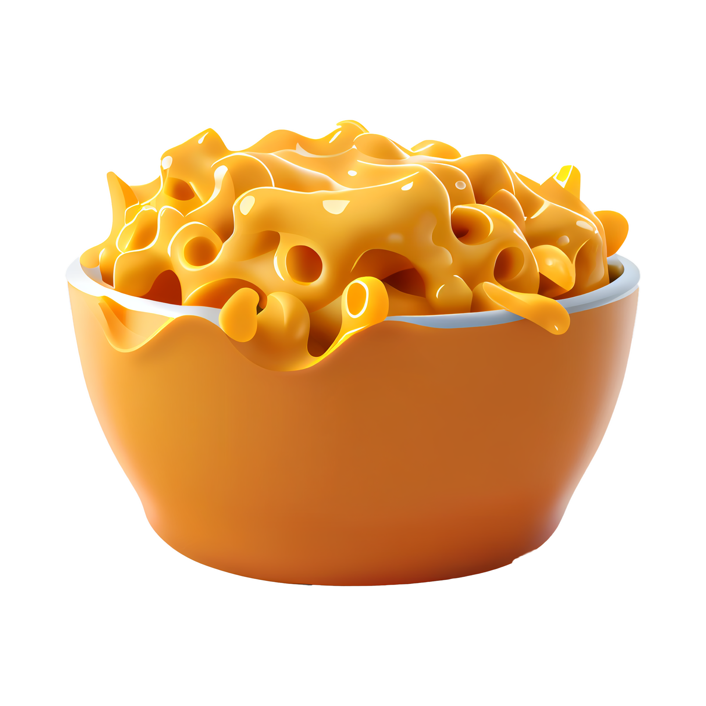

Magnificent Macaroni Salad

Recipe Ingredients
- 24 slices american cheese
- butter
- flour
- milk
- breadcrumbs
Steps
- Preheat oven to 350 degrees Fahrenheit.
- Tear all 24 slices of cheese into pieces; place in a medium saucepan on low heat.
- Add butter and sprinkle with black pepper to taste.
- Add 2 cups milk just until cheese is almost covered (you can always add more later).
- Add pepper.
- Keep on low to medium heat until completely melted; be sure to constantly stir so it doesn't stick or burn.
- Boil macaroni as directed on package; drain and place in an 11x7 baking dish.
- Pour cheese mixture into macaroni; stir in thoroughly until well mixed. (This is my favorite part, where the magic happens!).
- Sprinkle top with breadcrumbs.
- Bake at 350 degrees Fahrenheit for 15 to 20 minutes until edges are bubbling.
- Enjoy!